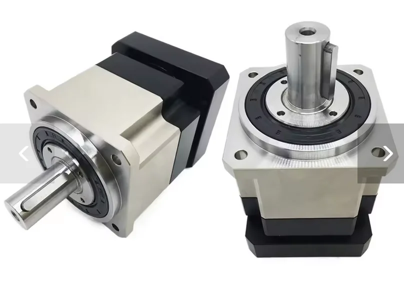

2. DIY Tips and Tricks¶
This section shares useful advice and best practices for building your own force feedback devices using VPforce Rhino motors and components.
2.1 Planetary Gearboxes for DIY Projects¶

While timing pulleys are a popular and cheap option for DIY projects, servo planetary gearboxes offer a compact and very strong way to increase the force of your motor. A big plus is that these gearboxes come with a sturdy bearing assembly already built-in. This saves you the headache and cost of designing your own bearing and mounting systems, which you’d have to do with a pulley setup.
2.1.1 Quality Matters: Why You Need Low Backlash¶
For the best force feedback experience, you need a high-precision, low-backlash gearbox (look for a rating of <3 arcmin). Backlash is the small amount of “slop” or free play you feel when the gearbox changes direction.
You might find cheap gearboxes with high backlash (25+ arcmin) that fit your motor, but they will make your controls feel mushy and create a noticeable deadzone in the center. The extra cost for a low-backlash gearbox is well worth it for the performance you’ll get.
2.1.2 Taming Gearbox Inertia¶
Planetary gearboxes have internal gears that create inertia, which can make your controls feel heavy or sluggish. You can easily cancel this out using the Natural Damping Compensation setting in the VPforce Configurator.
When you set this value correctly, it feels like the gearbox disappears, making your controls move freely and without any resistance when all other forces are turned off. This is key to making flight simulator controls, for example, feel light and responsive.
2.1.3 Recommended Gearboxes¶
These gearboxes from two AliExpress stores have been used and recommended by other DIY builders. It’s a good idea to check both stores to find the best price.
Motor Input Sizes:
- For 57BLF motors, you need an 8mm input shaft.
- For 86BLF motors, you need a 12.7mm input shaft.
2.1.3.1 Shaft Output Gearboxes¶
These have a simple rotating shaft, perfect for driving a pulley, a drum, or another rotating part.
For 57BLF Motors:
- YUN DUAN: https://www.aliexpress.us/item/3256801124644081.html
- TOSEASTAR: https://www.aliexpress.us/item/3256806043961557.html
For 86BLF Motors:
- YUN DUAN: https://www.aliexpress.us/item/3256801130161231.html
- TOSEASTAR: https://www.aliexpress.us/item/3256807826307043.html
2.1.3.2 Flange Output Gearboxes¶
These have a mounting flange with bolt holes, making it easy to attach parts directly to the gearbox. This is a very sturdy option, especially for direct-drive setups.
Models:
- 57BLF: PLX060 with 8mm input
- 86BLF: PLX090 with 12.7mm input
TOSEASTAR (both sizes in one link):
- PLX060 & PLX090 Combo: https://www.aliexpress.us/item/3256805002027480.html
YUN DUAN:
- 57BLF PLX060: https://www.aliexpress.us/item/3256801140322252.html
- 86BLF PLX090: https://www.aliexpress.us/item/2255801086131337.html
2.1.4 Choosing the Right Gearbox Ratio¶
The Rhino motors use an absolute encoder, which knows the motor’s exact position within one 360-degree turn (giving 4096 position points). However, it doesn’t count full rotations across power cycles.
Because of this, you should design your controls so that their full range of motion uses almost one full rotation of the motor. This setup gives you:
- Maximum Force: You get the most power from your motor.
- Less Power Use: The motor doesn’t have to work as hard.
- Highest Precision: You use all 4096 position points for the best control resolution.
For most projects, a 10:1 ratio is the sweet spot. This means the full movement of your controls will turn the motor about 36 degrees. For typical flight sticks or rudder pedals (+/- 15 degrees of movement), this ratio gives you plenty of room within the calibration range.
Important
Higher gear ratios that require more than one motor revolution work reliably during operation — the motor driver continuously tracks position across turns once powered on. However, at startup the single-turn absolute encoder cannot determine which revolution the motor is in. The mechanism must be positioned so the encoder reads near its electrical center (2048 counts) before powering on.
Read more about this in the 2.2.1 Multi-Turn Ambiguity Section
2.1.5 Assembly and Calibration¶
Getting the assembly right is key to making sure your controls are perfectly centered and the force feedback works correctly.
Step-by-Step Guide:
- Set up the Software: Open the VPforce Configurator, set the manual calibration range to 0-4096, and turn the spring effect on to 100%.
- Find Mechanical Center: Hold your control stick, wheel, or pedals in the physical center position.
- Tighten the Collar: While holding the control centered, tighten the collar that connects the motor shaft to the gearbox. This locks in your mechanical center.
- Recalibrate: Run the auto-calibration in the VPforce Configurator. This tells the software where the new center is, making sure your physical center and the software’s electronic center are perfectly aligned.
2.2 The Multi-Turn Problem¶
2.2.1 What is the Multi-Turn Problem?¶
The VPforce Rhino motor uses a single-turn absolute encoder. This sensor is very precise and reports the motor’s position within one 360-degree rotation as a value from 0 to 4095.
During Runtime: The motor driver continuously tracks motor rotation and counts full turns beyond 360°. Once powered on and initialized, the system maintains accurate multi-turn position tracking throughout operation.
The Startup Ambiguity: The problem occurs only at power-on. When the system starts, the encoder reports a position value (0-4095), but the driver has no way of knowing which revolution the motor is in. This creates ambiguity in multi-turn configurations.
If your mechanical setup (using gears, belts, or linkages) requires the motor to spin more than once for full control travel, you face this startup ambiguity problem.
Single-Turn Setups Can Also Have This Issue
Even in single-turn configurations (where the motor rotates less than 360° for full control travel), this problem can occur if the mechanical alignment is poor. If your control’s physical center position corresponds to an encoder value far from the electrical center (2048), the VPforce Configurator will display the C: (center) value in red as a warning.
A badly aligned single-turn setup means the control’s center point is near the encoder’s 0/4095 wrap-around boundary. This creates ambiguity because the system cannot distinguish between encoder positions near 0 and those near 4095 at startup.
Solution: Mechanically realign your build so the control’s physical center corresponds to an encoder reading close to 2048 (the electrical center). This ensures the center position is clearly defined and far from the wrap-around boundary.
Let’s visualize it. Imagine your setup requires 3 motor turns to move your joystick from one end to the other:
[Joystick at Left] [Joystick at Center] [Joystick at Right]
|-------------------------|-------------------------|
[Motor Turn 1] [Motor Turn 2] [Motor Turn 3]
<-------------> <-------------> <-------------> (Actual Motor Revolutions)
\ / \ / \ /
\_________/ \_________/ \_________/
0...4095 0...4095 0...4095 (What the Encoder Reports at Startup)
The Startup Problem:
When you power on your device, the encoder might report a value of 2048. However, the system has no way of knowing which of the three turns it’s in. The true mechanical center of your joystick might be in the middle of “Motor Turn 2,” but the encoder reading at startup is identical in every turn.
This startup ambiguity means the system cannot determine the true center position of your controls at power-on, which can lead to incorrect force feedback or unexpected behavior until manually corrected.
Runtime vs. Startup
Once powered on and homed, the driver continuously tracks full rotations and maintains accurate multi-turn positioning throughout operation. The ambiguity exists only at startup before the reference position is established.
2.2.2 The Solution: Manual Homing at Startup¶
Currently, the only way to solve this ambiguity is to manually place your controls in a known reference position before powering on the system.
This reference position must be the one that you have mechanically aligned to correspond with the encoder’s center value of 2048.
2.2.2.1 Required Startup Procedure¶
-
Identify Your Reference Position: This is the physical position of your controls that you have designated as the center.
- For a joystick, this is the physical center.
- For a collective, this is typically the “down” position.
-
Move Controls to Reference Position: Before applying power to the motor, physically move your controls to this exact position.
-
Power On: With the controls held in the reference position, you can now power on the system.
By doing this, you are manually telling the system which of the possible motor revolutions is the correct one. The system will assume that the encoder reading of 2048 corresponds to the true mechanical center, and all force feedback effects will be correctly aligned.
This is Not Optional
Failing to start the device in its known reference position will result in an incorrect center point and unpredictable FFB behavior. This step is required every time you power on the device.
Future Firmware Update
A soft homing feature, which will automate this process, is planned for future firmware updates.
2.3 Powering Multiple FFB Devices from a Single PSU¶
When running multiple VPforce FFB devices (e.g., joystick + pedals + collective) from a single power supply, all devices share the same DC ground. This simplifies wiring, but it introduces a critical risk: if the shared ground path is interrupted, fault current from the motors will seek an alternative path — through the USB cables and the PC.
2.3.1 Why USB Isolators Are Essential¶
Without USB isolators, every device shares a common ground through both the DC power supply and the USB connection to the PC. If the PSU ground becomes unstable — a loose barrel jack, a failing e-stop, or a cable break — high motor currents can flow through multiple USB cables simultaneously. A single ground fault can take out multiple boards in one event, even if the boards were otherwise functioning normally.
Use a USB Isolator on Each Device
When powering multiple FFB devices from a single PSU, install a USB isolator on each device’s USB connection. This physically breaks the ground path through USB and prevents a fault on one device from propagating to others or to the PC.
See the USB Isolator Recommendation section for product guidance.
2.3.2 Wiring Best Practices¶
- Use a PSU with adequate current capacity for all devices combined (e.g., Meanwell LRS-350-24 for multi-device setups)
- Keep DC wiring short and use adequate gauge (18AWG or heavier)
- Ensure all DC connectors are firmly seated and mechanically secured
- If using an e-stop switch, place it in the DC power line before the split to all devices
- Always connect DC power before USB — establish the ground path through the PSU first
- When reconnecting or servicing, power down all devices and disconnect USB cables before touching DC wiring